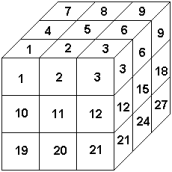

Zadania trzeciego etapu Konkursu Informatycznego dla gimnazjalistów LOGIA 14
Zadanie 1 (pokolenia).
Alicja postanowiła przygotować drzewo genealogiczne rodu Logianów. Na kartkach zapisała informacje o pokrewieństwie członków rodu – w postaci par [rodzic dziecko]. Olek, brat Alicji, niechcący rozsypał wszystkie jej notatki. Pomóż uporządkować dane i napisz jednoparametrową funkcję pokolenia, której wynikiem jest lista złożona z głowy rodu oraz list pozostałych członków rodziny podzielonych na kolejne pokolenia: dzieci, wnuki, prawnuki, praprawnuki itd. Lista osób należących do danego pokolenia powinna być uporządkowana alfabetycznie. Parametrem funkcji pokolenia jest niepusta lista złożona z dwuelementowych list imion, których pierwszy element jest imieniem rodzica, a drugi – imieniem jego dziecka. Zakładamy, że każdy członek rodu ma tylko jednego rodzica (za wyjątkiem głowy rodu, która nie ma rodzica).
Przykłady – Logo:
| Wynikiem | pokolenia [[a b] [b x] [a d] [a z]] | jest [a [b d z] [x]]. |
| Wynikiem | pokolenia [[Ula Ala] [Ola Ula] [Ela Ola] [Ela Jan]] | jest [Ela [Jan Ola] [Ula] [Ala]]. |
Przykłady – Python:
| Wynikiem | pokolenia([["a", "b"], ["b", "x"], ["a", "d"], ["a", "z"]]) | jest ["a", ["b", "d", "z"], ["x"]]. |
| Wynikiem | pokolenia([["Ula", "Ala"], ["Ola", "Ula"], ["Ela", "Ola"], ["Ela", "Jan"]]) |
jest ["Ela", ["Jan", "Ola"], ["Ula"], ["Ala"]]. |
Zadanie 2 (sześcian).
Sześcian pokrojono otrzymując n x n x n kostek – małych identycznych sześcianów.
Kostki ponumerowano liczbami od 1 do n3, kolejno warstwami od góry do dołu, w obrębie warstwy kolejno rzędami od przodu do tyłu, w rzędzie od lewej do prawej. | Numerowanie małych sześcianów, przykład dla n=3 |
Przykłady – Logo:
| Wynikiem | obok 3 11 | jest [2 10 12 14 20]. |
| Wynikiem | obok 7 1 | jest [2 8 50]. |
| Wynikiem | obok 10 1000 | jest [900 990 999]. |
Przykłady – Python:
| Wynikiem | obok(3, 11) | jest [2, 10, 12, 14, 20]. |
| Wynikiem | obok(7, 1) | jest [2, 8, 50]. |
| Wynikiem | obok(10, 1000) | jest [900, 990, 999]. |
Zadanie 3 (roboty).
Dwa roboty chodzą po płaszczyźnie, w każdym kroku przebywają identyczną jednostkową odległość w jednym z czterech podstawowych kierunków: góra, dół, prawo, bądź lewo, które oznaczone są, odpowiednio, literami g, d, p oraz l. Opis trasy każdego robota składa się z ciągu tych liter.
Oba roboty rozpoczynają wędrówkę z tego samego miejsca i chodzą bez końca. Rozważ pierwsze 100 kroków robotów i napisz dwuparametrową funkcję spotkanie, której parametrami są niepuste słowa z opisami tras robotów. Wynikiem funkcji jest liczba określająca, po którym kroku roboty ponownie spotkają się, bądź zero, jeśli takie spotkanie nie nastąpi. Jeśli opis trasy skończy się, to robot wykonuje polecenia ponownie od początku opisu.
Przykłady – Logo:
| Wynikiem | spotkanie "pd "g | jest 0. |
| Wynikiem | spotkanie "gp "pg | jest 2. |
| Wynikiem | spotkanie "dg "ggppddll | jest 8. |
Przykłady – Python:
| Wynikiem | spotkanie("pd", "g") | jest 0. |
| Wynikiem | spotkanie("gp", "pg") | jest 2. |
| Wynikiem | spotkanie("dg", "ggppddll") | jest 8. |
Zadanie 4 (załadunek).
Fabryka produkuje wyroby w kolejnych seriach (wszystkie wyroby danej serii są identyczne), a następnie ładuje do samochodów w celu przewiezienia do sklepu.
Napisz dwuparametrową funkcję ilesam, której wynikiem jest minimalna liczba samochodów potrzebnych do przewiezienia wszystkich wyprodukowanych wyrobów. Pierwszy parametr funkcji jest niepustą listą dwuelementowych list, z których każda zawiera informacje o kolejnej serii wyrobów: liczbę wyrobów i masę pojedynczego wyrobu. Drugi parametr jest listą dopuszczalnych ładowności kolejnych przyjeżdżających samochodów.
Zakładamy, że kolejne serie wyrobów ładowane są do samochodów w kolejności wyprodukowania, a samochody ładowane są w takiej kolejności, w jakiej przyjadą. Każdy samochód jest w stanie przewieźć co najmniej jeden wyrób z oczekujących na początku kolejki. Do dyspozycji jest wystarczająco wiele samochodów.
Przykłady – Logo:
| Wynikiem | ilesam [[4 5][2 2][1 20]] [17 25 25 17 25] |
jest 3 (pierwszy samochód przewiózł 3 wyroby, każdy o masie 5, drugi – 1 wyrób o masie 5 i 2 wyroby o masie 2, trzeci – 1 wyrób o masie 20). |
| Wynikiem | ilesam [[20 1][2 5][1 3][2 7]] [25 10 10 10 10 10] | jest 4 (pierwszy samochód przewiózł wszystkie 20 wyrobów o masie 1 i 1 wyrób o masie 5, drugi – 1 wyrób o masie 5 i 1 wyrób o masie 3, a trzeci i czwarty – po 1 wyrobie o masie 7). |
Przykłady – Python:
| Wynikiem | ilesam([[4, 5], [2, 2], [1, 20]], [17, 25, 25, 17, 25]) |
jest 3 (pierwszy samochód przewiózł 3 wyroby, każdy o masie 5, drugi – 1 wyrób o masie 5 i 2 wyroby o masie 2, trzeci – 1 wyrób o masie 20). |
| Wynikiem | ilesam([[4, 5], [2, 2] | jest 4 (pierwszy samochód przewiózł wszystkie 20 wyrobów o masie 1 i 1 wyrób o masie 5, drugi – 1 wyrób o masie 5 i 1 wyrób o masie 3, a trzeci i czwarty – po 1 wyrobie o masie 7). |